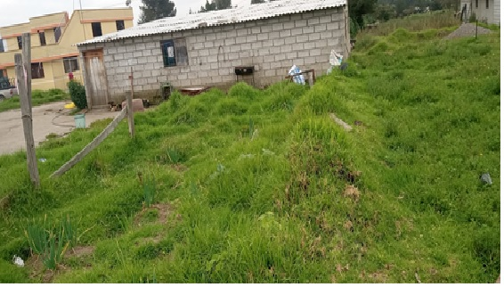
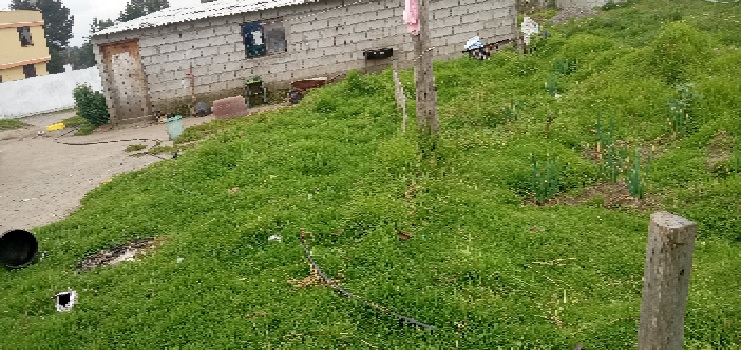
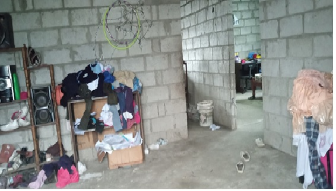
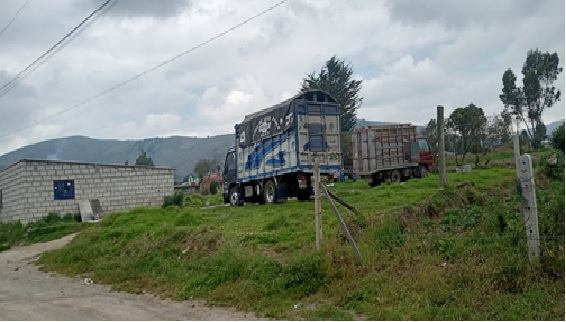

← volver al mapa
Casa - EC-RJ-156137
EC-RJ-156137 · casa · LATACUNGA, Cotopaxi
★ Oferta destacada




Datos del remate
| Avalúo pericial | $17,640 |
| Tipo de bien | casa |
| Área de construcción | 80.40 m² |
| Área de terreno | 796.00 m² |
| Cantón / Provincia | LATACUNGA, Cotopaxi |
| Dirección / Sector | se encuentra ubicado en el Barrio La Libertad. perteneciente a la parroquia toacazo |
| Señalamiento | Segundo Señalamiento |
| Fecha de remate | 2026-09-18 |
| No. de proceso | 18334202302955 |
Análisis vs. mercado
| Avalúo por m² | $219/m² |
| Mediana de mercado en la zona | $447/m² |
| Descuento vs. mercado | 51.0% |
| Comparables usados | 5 |
| Radio de búsqueda | 800 m |
| Puntaje | 92/100 |
Descripción completa del avalúo
la zona posee servicios básicos tales como agua potable, energía eléctrica. la zona posee calles de tierra.
el lote de terreno tiene una pequeña pendiente en el sentido norte-sur. la forma del terreno es regular.
perteneciente a la parroquia toacazo
Análisis de inversión (IA)
⚠ Dudosa — revisar bienEl descuento del 51% frente a la mediana de mercado parece atractivo, pero la base de solo 5 comparables en Toacazo (parroquia rural de Latacunga) hace que esa cifra sea poco confiable. El terreno de 796 m² es el activo real aquí, pero el acceso por calles de tierra, la pendiente y la ubicación rural limitan significativamente la liquidez futura. Vale la pena investigar más antes de comprometer dinero, pero con cautela.
A favor:
- Terreno amplio de 796 m² en relación al área construida de 80.40 m², lo que da margen para desarrollar o subdividir
- Descuento nominal del 51% respecto a la mediana de mercado, si los comparables resultan ser representativos
- Cuenta con agua potable y energía eléctrica, servicios básicos mínimos cubiertos
- Forma de terreno regular, facilita construcción o aprovechamiento futuro
- Avalúo bajo ($17,640) reduce la exposición absoluta de capital
En contra:
- Solo 5 comparables usados para calcular el descuento: muestra muy pequeña para una zona rural, el porcentaje de descuento puede ser estadísticamente poco sólido
- Parroquia Toacazo es rural y alejada del centro de Latacunga, lo que implica baja demanda y difícil reventa
- Calles de tierra como único acceso mencionado: conectividad limitada y dependiente de condiciones climáticas
- Relación construcción/terreno muy baja (80 m² construidos sobre 796 m²), posible estructura antigua o deteriorada
- Sin datos sobre el estado de la construcción, materiales, edad o si la edificación tiene valor real o es prácticamente un terreno con una edificación simbólica
Riesgos a verificar:
- No se menciona el estado de la construcción: podría estar en condiciones precarias o requirir inversión significativa de rehabilitación
- Acceso únicamente por calles de tierra: riesgo de aislamiento en época lluviosa, factor que deprime el valor comercial
- Pendiente norte-sur del lote: puede generar costos adicionales en cimentación o movimiento de tierras si se desea construir
- Ubicación en parroquia rural (Toacazo): mercado secundario muy estrecho, riesgo alto de iliquidez si se necesita salir de la inversión
- Sin información sobre gravámenes, hipotecas previas, litigios de linderos o situación posesoria del inmueble, datos críticos antes de cualquier oferta
- Sin información sobre si la propiedad está ocupada actualmente, lo que en un remate judicial representa un riesgo operativo relevante
Generado por IA a partir de la descripción — no es asesoría legal ni financiera.
Esta ficha es una copia de lo publicado en el sitio oficial de remates
judiciales de la Función Judicial del Ecuador, para consulta — no
reemplaza el expediente judicial. remates.funcionjudicial.gob.ec no da
un link propio por remate, por eso se generó esta página aparte.
Antes de ofertar, el expediente debe revisarlo un abogado.